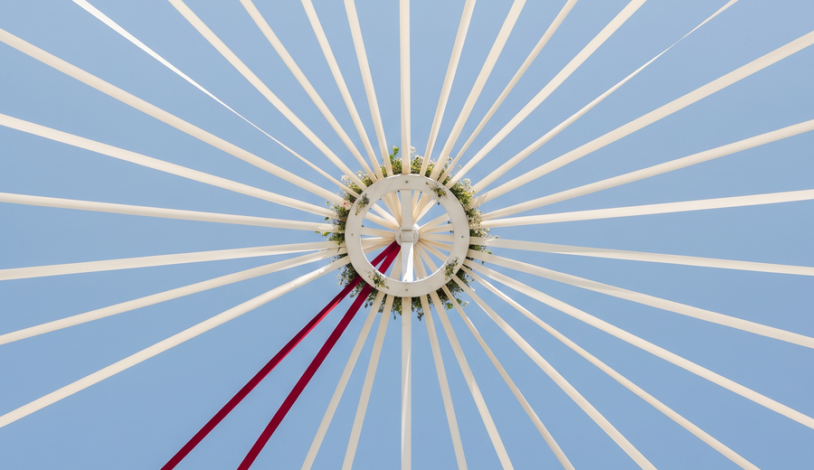
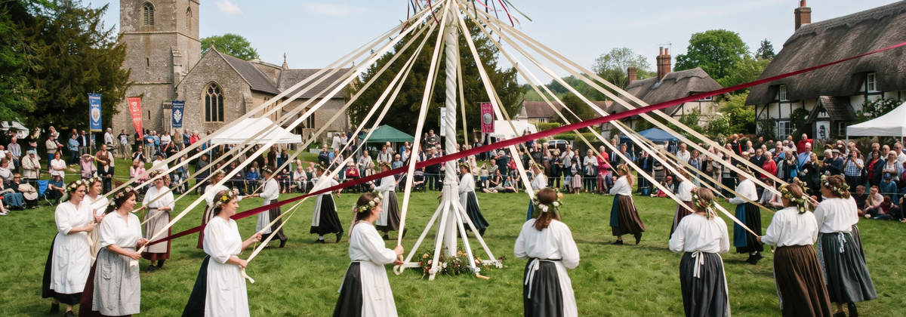

The Maypole Ring. A command line tool that writes a Graphviz dot file listing the call shaped names found in a script, every one of them a straight line out from a single MainScript node. No ribbon branches, and none are drawn.
| Option | What the README records |
|---|---|
-o | No description provided. This site does not guess that it names the output dot file. |
-v | Enable verbose logging. |
--beautify | Beautify the input script before analysis (jsbeautifier formatting). |
--decode_strings | Attempt to decode encoded strings: base64 in the Python b'...' literal shape, and hex only inside a quoted 0x literal such as '0x41'. |
--rename_variables | Attempt to rename obfuscated variables (renaming underscore variables). |
-h | Show help message and exit. |

if and for appear in the list as if they were calls.b'...' literal shape, and hex only inside a quoted 0x literal such as '0x41'; numeric literals outside quotes are left alone.-o is listed with no description provided, and no purpose is guessed for it here.